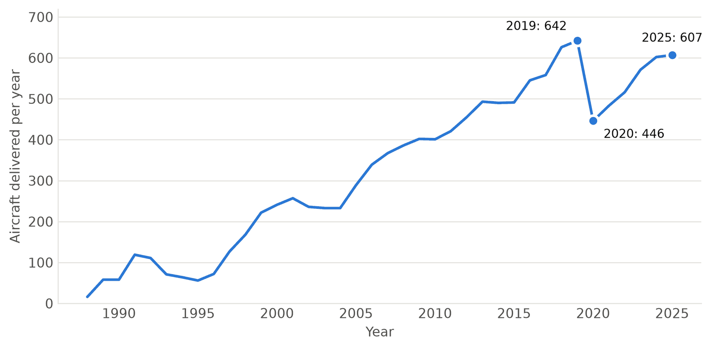
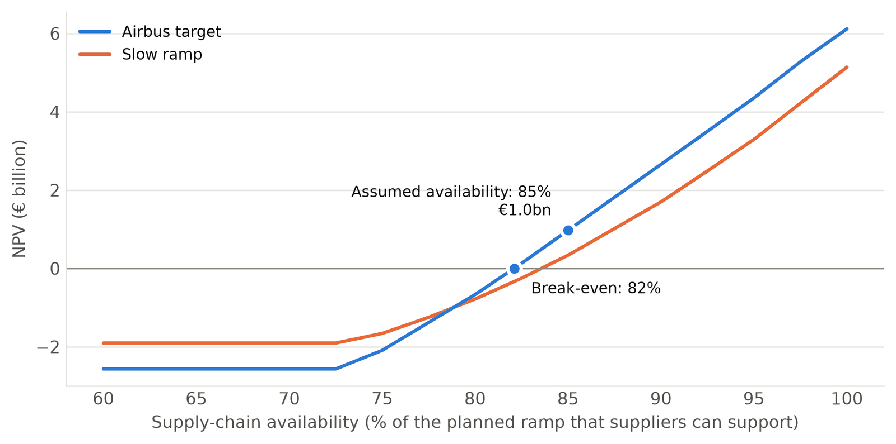
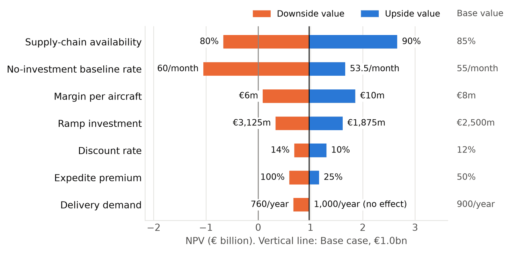
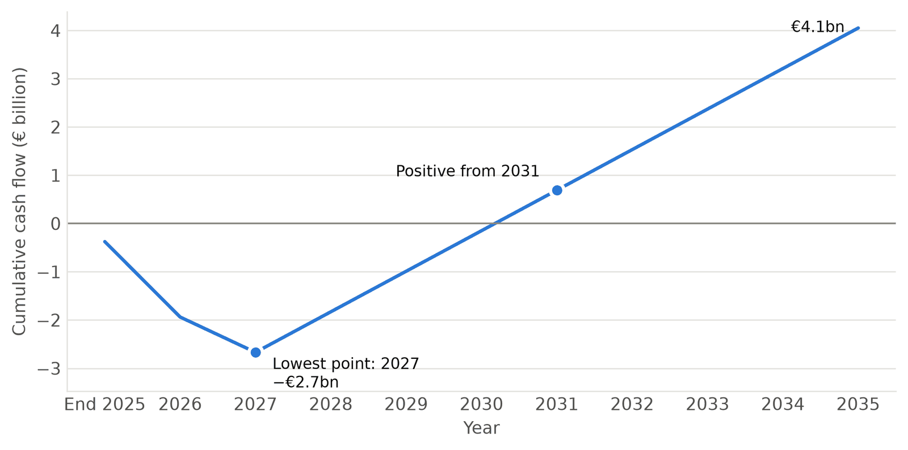

Airbus is targeting a production rate of 70 to 75 A320 Family
aircraft a month by the end of 2027. Whether that investment earns a
return depends heavily on its suppliers, who have held production
back before. To assess how much, I built a Python model and presented
my findings in a report.
Independent analysis based on public data. Not affiliated with or
endorsed by Airbus.
The finding in one number
82%of Airbus's plan must be supported by suppliers before the ramp-up pays
01 Situation
Sold out for eleven years
Airbus has more than 7,000 A320neo Family aircraft on order, but
delivered only 607 in 2025. At that pace, it would take over eleven
years to build what it has already sold, and new orders keep coming
in. So Airbus plans to raise production from about 51 aircraft a
month to 75.
The difficulty is that it has postponed that target several times
since 2022, and each time it has pointed to its suppliers, engines
above all.

A320 Family deliveries, 1988 to 2025. They have not yet recovered their 2019 peak. Source: Airbus.
02 Question
Airbus can build bigger factories. It cannot build its suppliers' engines.
An aircraft cannot be delivered without its engines and structures.
So I asked one question: how dependent is the value of the ramp-up
on suppliers' ability to keep pace?
03 Approach
A model built on three limits
I built a Python model of yearly deliveries and cash flows from 2026
to 2035. In any year, Airbus delivers the lowest of three limits.
Limit 1Airbus capacity
What its own factories can build.
Limit 2Supply ceiling
The share of the plan that suppliers can support.
Limit 3Demand
What customers are ready to take.
The ramp-up is then valued against what the existing factories could
deliver with no new investment, using net present value at a 12%
discount rate (Airbus's own is 11.9%).
Airbus does not publish its margin per aircraft, the cost of the
ramp-up or its existing capacity. I assumed them, stated them, and
tested each one over a range. This is scenario analysis, not a
forecast.
04 Findings
Worth doing, but only just
€1.0bn
Value of the ramp-up over ten years if suppliers support 85% of the plan. Cash flow stays negative until 2031.
82%
Break-even supplier availability. Against its earlier plans, Airbus has so far achieved about 77%.
€0.33bn
Value of each point of availability: −€0.7bn at 80%, €2.7bn at 90%.
€0.4–0.6bn
Cost of each year of unplanned delay. Two years makes the ten-year value negative.
Three points decide it
The base case sits only three points above break-even. Below about
73% availability, suppliers cannot support more aircraft than the
existing factories could already build, and the whole investment is
lost.

Value of the ramp-up, 2026 to 2035, by supply-chain availability. Source: own model.
Nothing else matters as much
I moved every assumption to its downside and upside value in turn.
Supplier availability moves the result more than any other input.
Demand barely moves it, because suppliers hold deliveries below what
customers would take anyway.

Sensitivity of the ten-year value to each assumption. Source: own model.
The money goes out years before it comes back
The investment is made before the extra aircraft are delivered, so
the low point is −€2.7bn in 2027. With so long a payback, anything
that postpones deliveries removes much of the value.

Cumulative cash flow of the ramp-up, undiscounted. Source: own model.
05 So what
What it means for Airbus
Paying to help suppliers is justified.
Five points of availability are worth €1.7bn, against €2.5bn
assumed for Airbus's whole capacity investment.
Invest when suppliers are ready, not by the calendar.
A delay Airbus sees coming costs €0.2bn to €0.9bn less than one it
does not.
A slightly slower plan may be worth more.
The fastest ramp gains only €0.1bn over one that reaches rate 75 a
year later, while a one-year slip costs €0.6bn.
After rate 75, the next gain is supply, not capacity.
Deliveries stop at 765 aircraft a year against capacity and demand
of 900.
How far to trust it
The absolute figures rest on my own assumptions and are
indicative. The comparisons between cases are sturdier, because
the same assumptions sit on both sides.